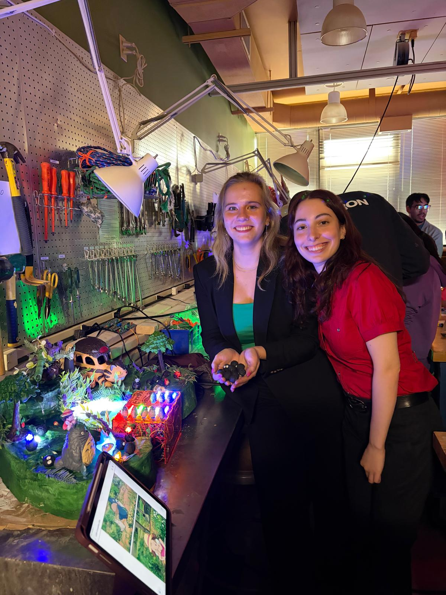
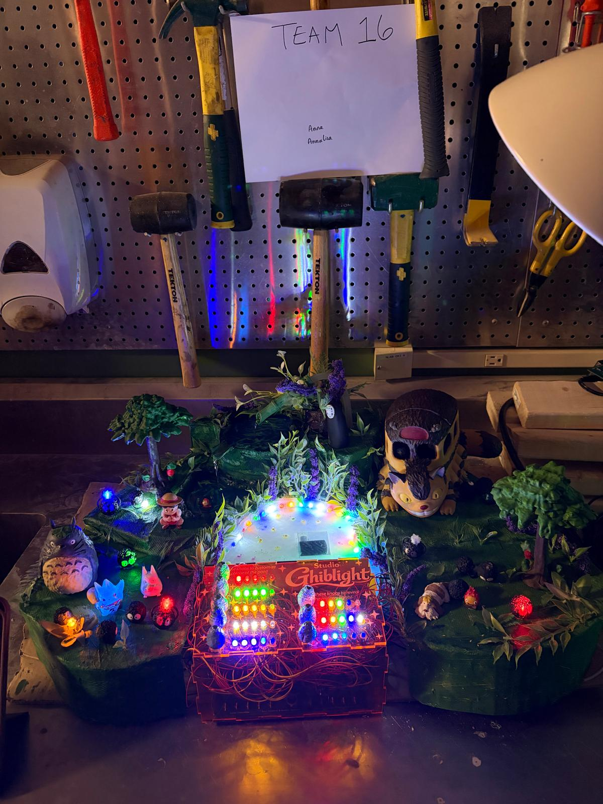
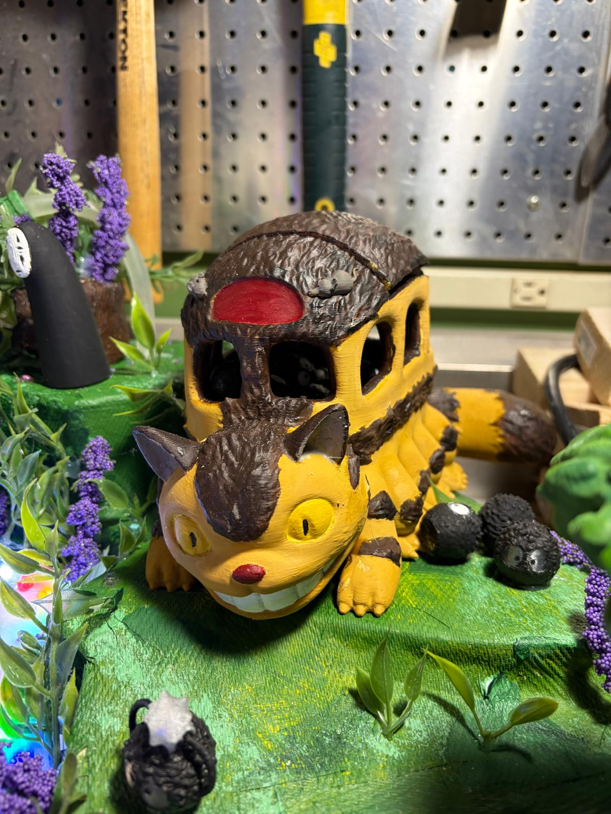
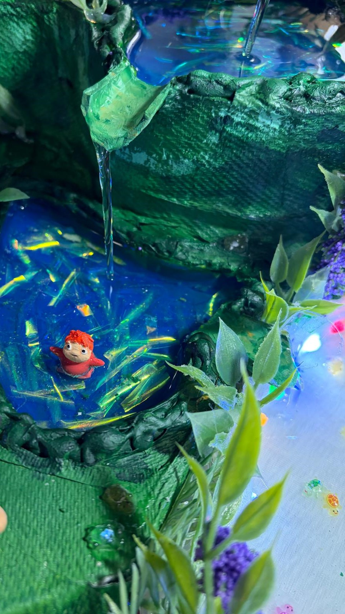
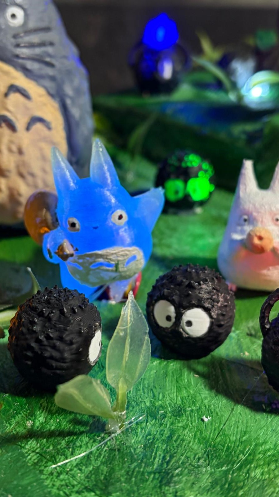
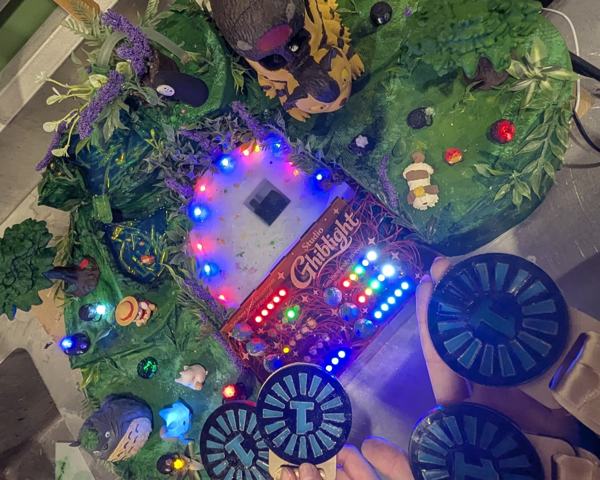
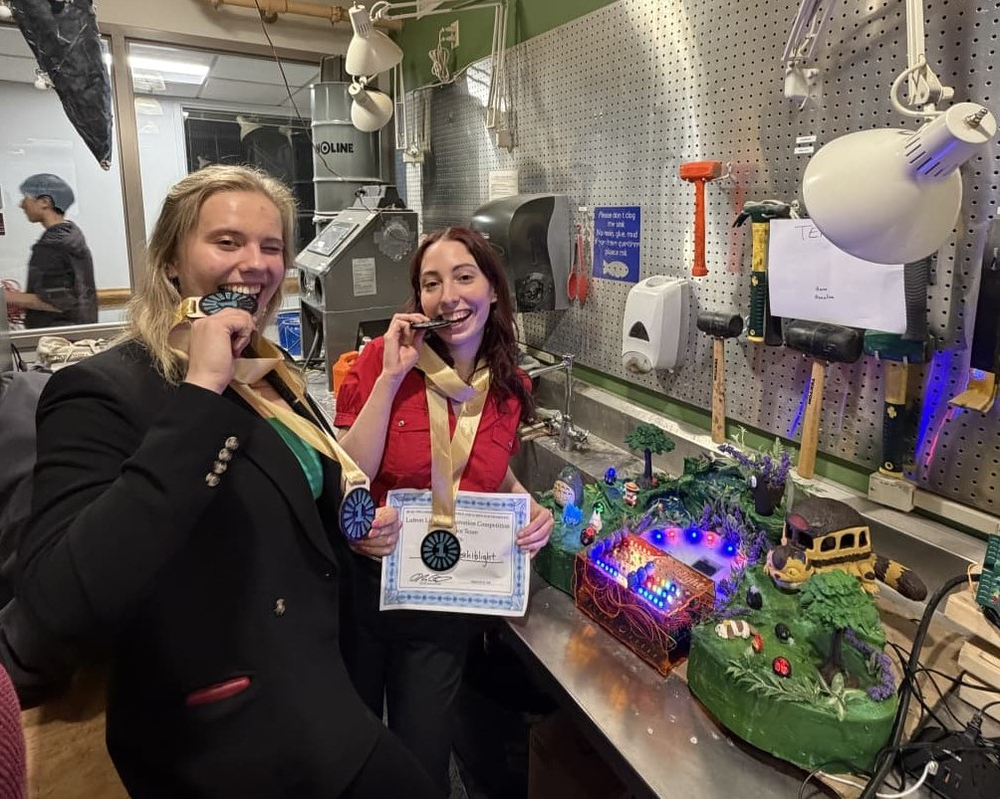
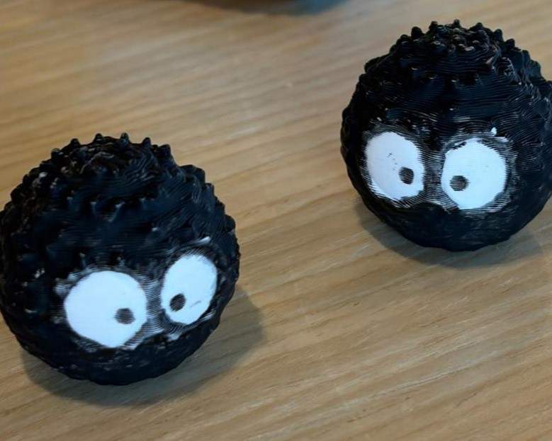
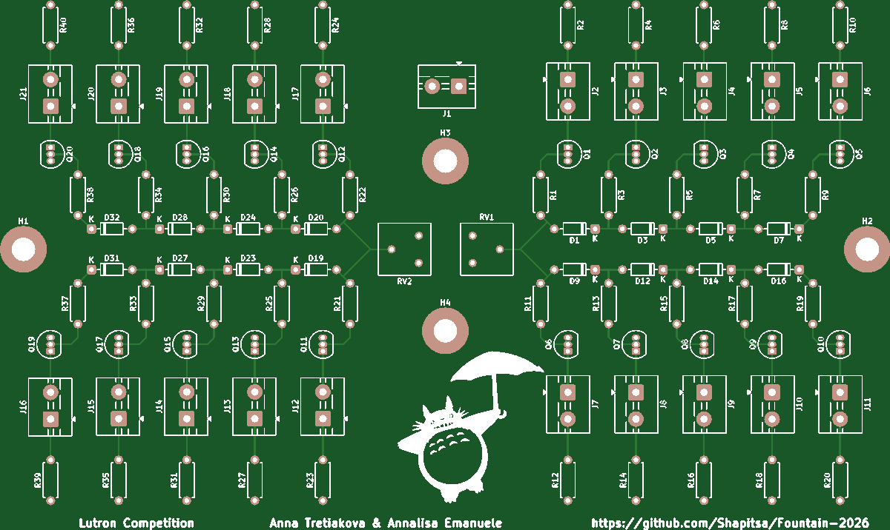

Project Overview
We designed and printed our own PCBs to hold a transistor network, enabling a knob to sequentially light up five LEDs. Each knob controlled two sets of five LEDs, allowing a control board to replicate the LED changes in both the main build and the control board. To elevate the electronics showcase, we incorporated a running water fountain. All Studio Ghibli characters were 3D printed, hand-painted, and arranged on a paper-mâché diorama. The user could turn the knobs themselves and customize the color of the main pool, adding a dynamic visual element to interact with.
Project Images








PCB Close Up View

On a different note, as a lab advisor at SiLab, I had the opportunity to make the medals for this competition a second year in a row and it was a full circle moment for me to win a medal I made myself. These medals glow in the dark, which perfectly aligns with the motivations behind the Lutron Competition.